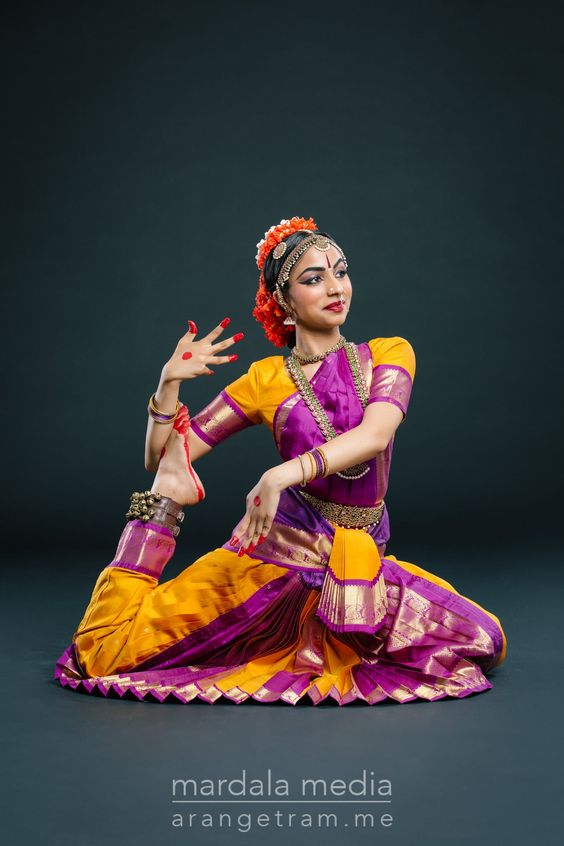
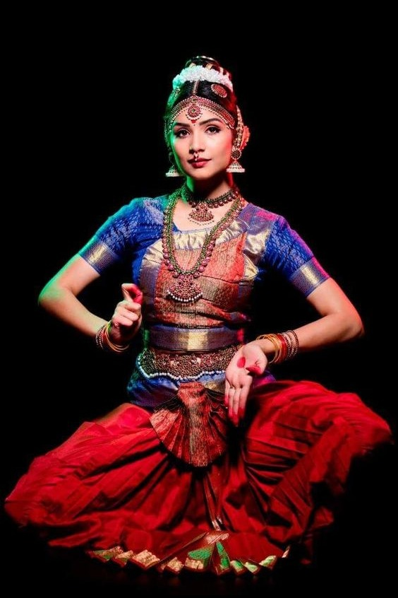
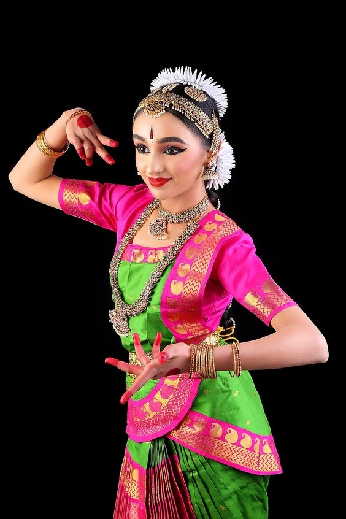

What is Bharatanatyam?
Bharatanatyam is a traditional Indian dance that originated in Tamil Nadu, India, more than 2,300 years ago. Bharatanatyam is one of the eight Indian classical dances and is widely performed worldwide. Since its revival in the 20th century, Bharatanatyam has been thriving, and there are many new versions of the traditional dance that are performed today. From TikTok to Instagram, Bharatanatyam can also be seen on social media. On this website, you will learn all that you need to know about the breathtaking dance form of Bharatanatyam!
Bharatanatyam stands for "Bha," "ra," "ta," and natyam. "Bha" stands for "bhavam," which means expression or emotions, a way to convey feeling to the audience. "Ra" stands for ragam, which means a collection of musical tones or melodies that provide the musical aspect of Bharatanatyam. "Ta" stands for thalam, which is the rhythmic cycle that indicates beats for the dancer. Finally, "Natyam" stands for dance, the entire dancing aspect of Bharatanatyam. This is what Bharatanatyam is: a combination of Bhavam, Ragam, and Thalam immersed in a traditional dance.
  
There are also 7 different elements or pieces to Bharatanatyam, all of which are performed during a dancer's debut performance, also known as an "Arrangetram". These pieces showcase all aspects of Bharatanatyam, from its soft and subtle movements to the most rhythmic and bold beats. These pieces bring Bharatanatyam to life and truly showcase a dancer's talents and ability. These pieces are:
- Alarippu (alar-ip-pu)/Pushpanjali (push-pan-jal-i)
- Jathiswaram (jath-i-swa-ram)
- Sabdam (sabh-duhm)
- Varnam (var-nuhm)
- Keerthanam (keer-tha-nuhm)
- Thillana (thill-anna)
- Mangalam (muhn-gal-uhm)
Here is some more information on these pieces and their significance to Bharatanatyam:
| Dance Piece | Significance | Example |
|---|---|---|
| Alarippu/Pushpanjali | Alarippu and Pushpanjali are the auspicious dances initially performed at the beginning of a debut performance. These dances symbolize welcoming their teachers, families, and the audience. These dances also welcome and thank God; dancers ask for God's blessing to ensure a smooth and great performance. These dances are also considered warm-up pieces, which prepare the dancer for the next parts of the performance. | |
| Jathiswaram | Jathiswaram is both a rhythmic and melodious dance that follows the two initial dances. Jathi literally means "rhythmic syllables," and although there are some melodies in this piece, much of it is stern and structured. This is a semi-rigorous dance where the dancer's basic abilities and training are on full display. Unlike Alarippu or Pushpanjali, Jathiswaram is more for the enjoyment of the audience than for its dedication to God. | |
| Sabdam | Sabdam is a brief piece that often uses small phrases to describe the dancer's actions and expressions. This piece describes small scenarios or situations in which the dancer is displaying themselves. Sabdam is a melodious piece, with very few rhythmic syllables featured in its core. The musicians behind the scenes must take control of this piece to ensure that the dancer can perform "bhavam" and display expressions accurately. | |
| Keerthanam | Keerthanam is a melodious and simple piece focused on mythological storytelling and the display of various emotions. Keerthanam is done after Varnam to help the dancer cool off and recharge for Thillana. Keerthanam is mainly focused on graceful hand movements and conveying different feelings felt by characters in the story. These two elements gather together to create a simplistic yet beautiful piece that displays both beginner and intermediate-level expressions that can be felt by audiences and God himself. | |
| Thillana | Thillana is considered the "climax" of a debut performance. This exciting piece is both enjoyable for the dancer and the audience. Thillana displays various different footwork styles as well as tricks (such as splits and bends) while also displaying neat and stern hand movements. Thillana sends a message to the audience that the performance is nearing its end and all should pay their full attention to the dancer. | |
| Mangalam | Mangalam is the final piece of a debut performance. Mangalam is the farewell piece by the dancer, where they thank their family, audience, and God for the smooth performance. This dance piece also sends messages of good fortune and welfare to the audience and thanks them for taking the time to be at this debut performance. Mangalam is also considered the dance piece where the dancer is showered with love and support for all their hard work in this debut performance. |

{kind=link}